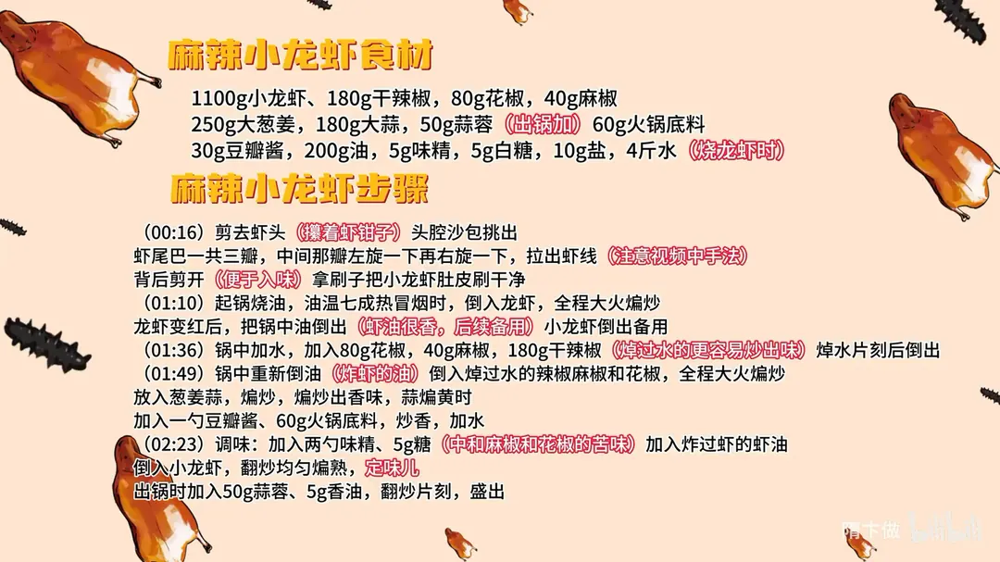

麻辣小龙虾
隋卞一做。小龙虾 1100g 剪头挑包、转尾抽线、开背刷净；七成热油大火炸红，干辣椒 180g、花椒 80g、麻椒 40g 焯水后与葱姜蒜、60g 火锅底料同炒，加 4 斤水烧入味，出锅前下蒜蓉和香油。
原视频：https://www.bilibili.com/video/BV14r421c7R8
食材
小龙虾、干辣椒 等 14 样
| 类别 | 用料 | 用量 |
|---|---|---|
| 主料 | 小龙虾 | 1100g |
| 辅料 | 干辣椒 | 180g |
| 辅料 | 花椒 | 80g |
| 辅料 | 麻椒 | 40g |
| 辅料 | 大葱、姜 | 250g |
| 辅料 | 大蒜 | 180g |
| 出锅 | 蒜蓉 | 50g |
| 调料 | 火锅底料 | 60g |
| 调料 | 豆瓣酱 | 30g |
| 调料 | 油 | 200g |
| 调料 | 味精 | 5g |
| 调料 | 白糖 | 5g |
| 调料 | 盐 | 10g |
| 调料 | 水 | 4 斤 |
步骤
- 处理虾：剪去虾头，注意躲着虾钳子，把头腔里的沙包挑出；虾尾一共三瓣，中间那瓣先左旋一下再右旋一下，拉出虾线；虾背剪开便于入味，再用刷子把小龙虾肚皮刷干净。
- 炸虾：起锅烧油，油温七成热冒烟时倒入小龙虾，全程大火煸炒；虾变红后把锅里的油倒出（虾油很香，留着后续用），小龙虾倒出备用。
- 焯料：锅中加水，放入 80g 花椒、40g 麻椒、180g 干辣椒，焯水片刻后倒出——焯过水的更容易炒出味。
- 炒底料：锅中重新倒入炸虾的油，下焯过的辣椒、麻椒和花椒，全程大火煸炒；放入葱姜蒜煸出香味，蒜瓣变黄时加一勺豆瓣酱、60g 火锅底料炒香，加水。
- 下虾调味：加两勺味精、5g 白糖（中和花椒麻椒的苦味），倒入炸虾留下的虾油，再倒入小龙虾，翻炒均匀，大火煸熟定味儿。
- 出锅：出锅前加入 50g 蒜蓉、5g 香油，翻炒片刻即可盛出。
小贴士
- 干辣椒、花椒、麻椒先焯水再炒，去苦味、出香快。
- 炸虾的油别倒掉，留着炒底料，虾味全在这一锅油里。
讲解要点
难度：★★★☆☆（难点是处理虾和炒料，料要煸狠又不能糊）
为什么这么做
- 看肚皮判断水质：肚皮白净说明养虾的水质好，脏水里养的虾怎么刷都发黑。
- 剪头时先攥住钳子、挑掉虾包：活虾受惊会夹手；虾包里是泥沙和内脏，不挑出来整锅汤发苦。
- 抽虾线时拧尾巴中间那一瓣：中间那瓣连着一整根虾线，左右一拧就能整根带出来。
- 开背剪一刀：背上开口，麻辣汤才进得到虾肉里，吃的时候也好剥。
- 七成热油大火炸到变红：高温迅速封住虾肉，壳红肉不柴；家庭用半煎半炸就够了。
- 辣椒花椒先焯水、下锅要煸狠：焯过水的料表面湿润不易糊，香味出得快；煸到蒜黄、辣椒出香，辣味才醇。
- 加糖遮苦、出锅前才下蒜蓉香油：花椒麻椒久煮会发苦，糖能压住；生蒜的冲香和香油最后放才留得住。
容易翻车
- 虾包没挑干净，汤发苦、带泥沙。
- 干辣椒花椒不焯水直接下锅，一炒就糊。
- 料没煸透就加水，只有生辣味，香味出不来。
- 油温不到就下虾，壳不红、肉出水变柴。
- 糖放少了，麻椒的苦味压不住，越吃越苦。
原片尾卡

原片文案
AI 字幕校准稿
前几天我们去吃小龙虾，按只卖，一只八块，还没多大；稍微好点的就是 12 啊、16 啊，还有贵的。不如回家自己做，我跟你讲，来吧。
小龙虾要怎么看这个小龙虾好不好？你看这肚皮下边很干净，那它养的水质好。
要先把虾头剪去，剪的时候把这俩钳子给它攥着点。把头一刀绞下去，然后把里边这有脏东西给它窝出来，这有个虾包，对，出来了，看见了吧。
然后就是虾线。虾尾巴一共有三瓣，把中间一瓣左扭一下、右扭一下、顿一下，这个虾线就出来了。然后为了便于入味儿，在背后剪一下。还需要刷一下，这样一只小龙虾就算处理好了。
起锅烧油。家庭版本比较简单，采用这种半煎半炸的就可以了。这油得烧到七成热，冒烟的好，把龙虾倒入锅里边，全程大火不用改，炸到全都变红了，把这油滗一下，倒到漏勺里边。
来点水，花椒麻椒、干辣椒——过过水的更容易炒出味。锅里边重新加油，焯过水的辣椒花椒炒一下，全程大火，葱姜蒜都放进去一块炒。兄弟，看这料横不横。
这一步一定在家要煸得狠一点，蒜要煸黄，煸香花椒，干辣椒都要煸出味来。然后里边加上一勺豆瓣酱，出色用的，然后加上火锅底料，炒香了，加水，味精来两勺，白糖——这个麻椒花椒煮完之后多少会有点苦味的，所以要用糖来遮一下这苦味。
炸出那虾油倒进去，把虾倒进去。如果你买的虾的品质不是那么好，这一步你就要加点啤酒，或者是花雕酒之类的。开锅之后盖上盖焖它 5 分钟。
出锅的时候来点蒜末、香油，出锅。
来吧兄弟，你就吃去吧。麻辣鲜香烫，麻辣味道和辣的味道是很重的，好下啤酒，果然夏天得吃小龙虾。因为咱背部给它剪了一下，完全浸到里面了，还真的挺麻的。一定要注意，麻椒跟花椒要混着放，纯放麻椒会麻得发苦的。而且咱给他虾包挑了，那个虾头和虾脑特别方便，剪完之后它顺着还能进味呢。大家在家试一下，这种方法你也可以做那种虾，什么蛙类的，什么都可以，很万能。